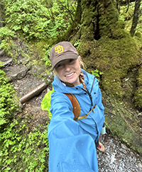

Autumn Roundy | WWD 130
Hello! My name is Autumn Roundy and I am from New Mexico. I grew up in southern New Mexico where green chili was our staple food item. I loved living the the southwest, but moved up north to Meridian, ID after venturing through some of my college career. I have my associate's degree in photographic communications where I photographed wildlife in Yellowstone National Park for a year. I am currently living this summer in Ketchikan, AK where I help run tour boats to private island trails in the Tongass National Forest. I continue photographing the wildlife here in Alaska and go on many excursions in my off time. I am so thrilled to be in Web Development and plan on making a long term career in this industy.